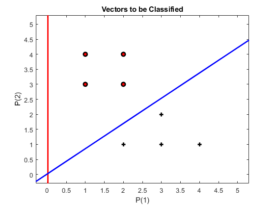

clear all; clc; cla; clf;
pause_flag = 0;
max_epoch = 200;
P = [
2 3 4 3 1 1 2 2;
1 1 1 2 3 4 3 4;
1 1 1 1 1 1 1 1
];
T = [1 1 1 1 0 0 0 0];
[R, Q] = size(P); [S, Q] = size(T);
figure(1);
plotpv(P(1:R-1,:), T);
Change_Marker
W = rand(S,R);
Wp = W(:, 1:R-1);
Bp = W(:,R);
plotpv(P(1:R-1,:), T);
plotpc(Wp, Bp);
watchon;
cla;
plotpv(P(1:R-1,:), T);
pause(3);
figure(1);
E=1;
linehandle = plotpc(Wp, Bp);
epoch = 1;
while (sse(E) && (epoch <= max_epoch))
Ai = hardlim(W*P);
Ei = T-Ai;
dWq = learnp(W, P, [], [], [], [], Ei, [], [], [], [], []);
W = W+dWq;
Wp = W(:, R-1);
Bp = W(:, R);
linehandle = plotpc(Wp, Bp, linehandle);
lines = findobj(gcf, 'Type', 'Line');
Change_LineWidth
Change_Marker
drawnow;
if(pause_flag == 1)
pause(1);
end
A = hardlim(W*P);
E = T-A;
epoch = epoch +1;
end
watchoff;
disp('Target is ')
T
disp('Solution reached of ')
A
disp('With weights ')
W
testPoint = findobj(gca, 'Type', 'Line');
set(testPoint, 'Color', 'red');
hold on;
plotpv(P(1:R-1, :), T)
Wp = W(:, 1:R-1);
Bp = W(:, R);
plotpc(Wp, Bp);
Change_LineWidth
Change_Marker
hold off;
Target is
T =
1 1 1 1 0 0 0 0
Solution reached of
A =
1 1 1 1 0 0 0 0
With weights
W =
6.7792 -8.0660 0.1299
